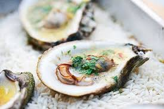
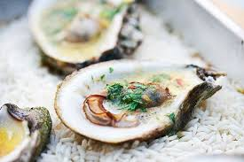

Oysters
Ways to Eat Them: Raw (on ice, with vinegar and/or lemon), grilled, smoked, steamed, baked, boiled, pickled, poached, fried, in a po' boy; usually by the half-dozen or whole dozen or 3 dozen.
Pros: Supposedly an aphrodisiac (but only because they look suggestive wink). Easy to share. Varieties from different places / bodies of water all taste different. Come in their own little shotglasses. You sort of swallow them whole, so chewing is not an issue.
Cons: Sometimes have actual sand in them. They look like placenta.
The Best Finger Foods.
The Best Things to Put in Ramen.
The Best Foods for Clear Skin.
 
